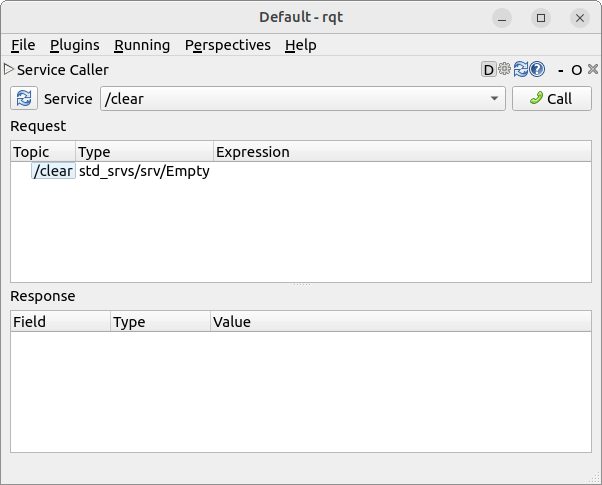

Turtlesim is a great introduction to ROSRobot Operating System 2Robot Operating System 2 as it is a lightweight simulator and easy to work on. It illustrates what ROSRobot Operating System 2Robot Operating System 2 does at a fundamental level to give us an idea of what we will do with a real robot or a robot simulation later on.
In principle, The ros2 command is how the user manages, introspects, and interacts with a ROSRobot
Operating System 2Robot Operating System 2 system. It supports multiple commands which target
different aspects of the system and its operation.
The ros2 tool is part of the core ROSRobot Operating System 2Robot Operating System 2
installation and should already be installed. This can easily be tested by typing ros2 into a
terminal.
The second tool is rqt, a GUIGraphical User InterfaceGraphical User Interface tool for ROSRobot
Operating System 2Robot Operating System 2.
Everything done in rqt can be done using CLICommand-Line InterfaceA software mechanism you
use to interact with your operating system using your keyboard, but rqt provides a more
user-friendly way to manipulate ROSRobot Operating System 2Robot Operating System 2
elements.
We will work together to understand the fundamental concept which build the core of ROSRobot Operating System 2Robot Operating System 2, like nodes, topics, and services. All of these concepts were discussed in a previous chapter theoretically and now, we will simply set up the tools and get a feel for them.
ros2[COMMAND]Manualros2 is an extensible command-line tool for ROS 2.
Installing the Required Packages In case of NOT having a configured docker container which was discussed in detail previously, please use the following commands to install all the necessary packages.
To check if the package is installed, let’s run the following command in the terminal, which should return a list of turtlesim’s executable options:
Installing and Starting Turtlesim Let’s begin this tutorial by starting turtlesim. Once started, we will see messages from the node. There we can see the default turtle’s name and the coordinates where it spawns.
QStandardPaths: XDG_RUNTIME_DIR not set, defaulting to '/tmp/runtime-ubuntu' [INFO] [1748967100.900464593] [turtlesim]: Starting turtlesim with node name /turtlesim [INFO] [1748967100.908647551] [turtlesim]: Spawning turtle [turtle1] at x=[5.544445], y=[5.544445], theta=[0.000000]
The simulator window should appear, with a random turtle in the centre. Here we can see the
turtlebot in its natural habitat, the turtlesim environment. The type of the turtle changes every time a
new turtlesim environment is called. All these turtles represent a version of ROSRobot Operating
System 2Robot Operating System 2.
Here we can see the
turtlebot in its natural habitat, the turtlesim environment. The type of the turtle changes every time a
new turtlesim environment is called. All these turtles represent a version of ROSRobot Operating
System 2Robot Operating System 2.
Making the Turtle Move Around
Now,
Reading from keyboard --------------------------- Use arrow keys to move the turtle. Use G|B|V|C|D|E|R|T keys to rotate to absolute orientations. 'F' to cancel a rotation. 'Q' to quit.
At this point we should have three (
- i.
- a terminal running
turtlesim_node, - ii.
- a terminal running
turtle_teleop_key, and - iii.
- the turtlesim window itself.
Let’s arrange these windows so we can see the turtlesim window, but also have the terminal
running turtle_teleop_key active so we can control turtlesim’s turtle using the arrow keys.
It will move around the screen, using its attached “pen” to draw the path it followed so
far.
Pressing an arrow key will only cause the turtle to move a short distance and then stop. This is because, realistically, we wouldn’t want a robot to continue carrying on an instruction if, for example, the operator lost the connection to the robot.
We can see the nodes, and their associated topics, services, and actions, using the list sub-commands
of the respective commands:
echo "~~ Node information ~~" && ros2 node list && echo "~~ Topic information ~~" && ros2 topic list && echo "~~ Service information ~~" && ros2 service list && echo "~~ Action information ~~" && ros2 action list
~~ Node information ~~ /teleop_turtle /turtlesim ~~ Topic information ~~ /parameter_events /rosout /turtle1/cmd_vel /turtle1/color_sensor /turtle1/pose ~~ Service information ~~ /clear /kill /reset /spawn /teleop_turtle/describe_parameters /teleop_turtle/get_parameter_types /teleop_turtle/get_parameters /teleop_turtle/list_parameters /teleop_turtle/set_parameters /teleop_turtle/set_parameters_atomically /turtle1/set_pen /turtle1/teleport_absolute /turtle1/teleport_relative /turtlesim/describe_parameters /turtlesim/get_parameter_types /turtlesim/get_parameters /turtlesim/list_parameters /turtlesim/set_parameters /turtlesim/set_parameters_atomically ~~ Action information ~~ /turtle1/rotate_absolute
Don’t worry about what this all means as we will have a detailed look into each of them later.
Running rqt
rqt is a GUIGraphical User InterfaceGraphical User Interface framework which implements numerous
tools and interfaces in the form of plugins. If it is not installed on our system please run the following
commands:
Once installed, running it is pretty straightforward:
When running rqt for the first time, the window will be blank. This is normal. To see what is currently
going on just select Plugins/Services/Service Caller from the menu bar at the top.rqt with only turtlesim and teleop running.
Use the refresh button to the left of the Service dropdown list to ensure all the services of our turtlesim
node are available. Once refreshed, click on the Service dropdown list to see services belonging to
turtlesim, and select the /spawn service.
Working the the spawn service
Let’s use rqt to call the /spawn service. We can guess from its name that /spawn will create another
turtle in the turtlesim window.
Give the new turtle a unique name, like turtle2, by double-clicking between the empty single quotes in
the
Next enter some valid coordinates at which to spawn the new turtle, like x = 1.0 and
y = 1.0.
If we try to spawn a new turtle with the same name as an existing turtle, like the default turtle1, we
will get an error message in the terminal running turtlesim_node.

To spawn turtle2, we then need to call the service by clicking the Call button on the upper right side
of the rqt window. If the service call was successful, we should see a new turtle, again with a random
design, (...)
All these designs are based on ROSRobot Operating System 2Robot Operating System 2
distributions logos. spawn at the coordinates we input for x and y. Refreshing the service list in rqt, we
will also see that now there are services related to the new turtle, turtle2, in addition to
turtle1.
Changing the Trail Parameters
Now let’s give turtle1 a unique pen using the /set_pen service:


The values for r, g, and b, which are between 0 and 255, set the colour of the pen turtle1 draws with,
and width sets the thickness of the line.
To have turtle1 draw with a distinct red line, change the r value to 255, and width value to
5.
Don’t forget to call the service after updating the values.
If we were to return to the terminal where turtle_teleop_key is running and press the arrow keys, we
will see turtle1’s pen has changed and also noticed that there’s no way to move turtle2. That’s
because there is no teleop node for turtle2.
Remapping Controls
We need a second teleop node in order to control turtle2. However, if we try to run the same
command as before, we will notice that this one also controls turtle1. The way to change this behavior
is by remapping the cmd_vel topic.
To do that, In a new terminal, source ROSRobot Operating System 2Robot Operating System 2, and run:
Now, we can move turtle2 when this terminal is active, and turtle1 when the other terminal running
turtle_teleop_key is active.